Projects & Fabrication
Partook in the full redesign of a display case from initial concept through installation. Developed mount sketches, selected materials, and oversaw the physical installation of artifacts.


Designed and fabricated custom mounts, including soldering, sanding, painting, and finishing. Also constructed plexiglass bonnets, creating archival-quality protective housing for collection objects.
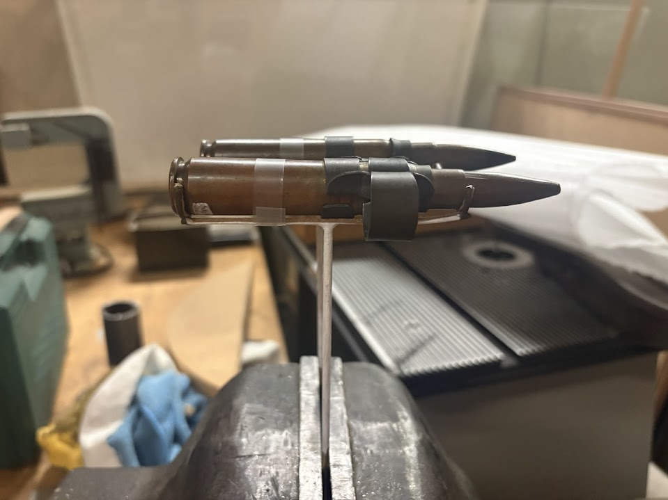

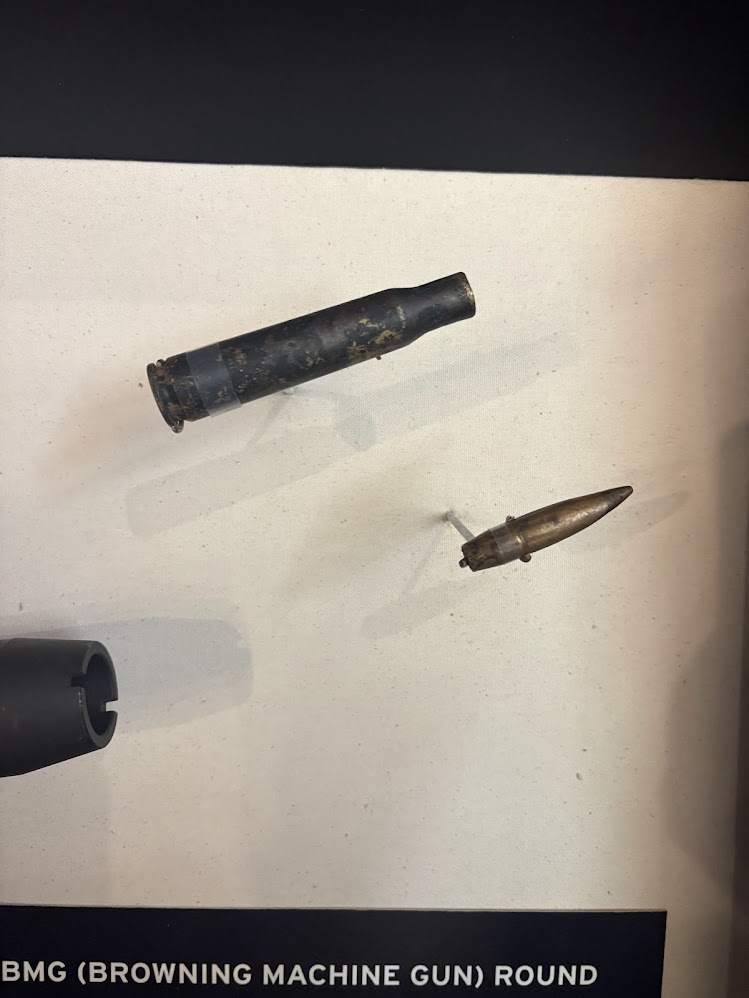
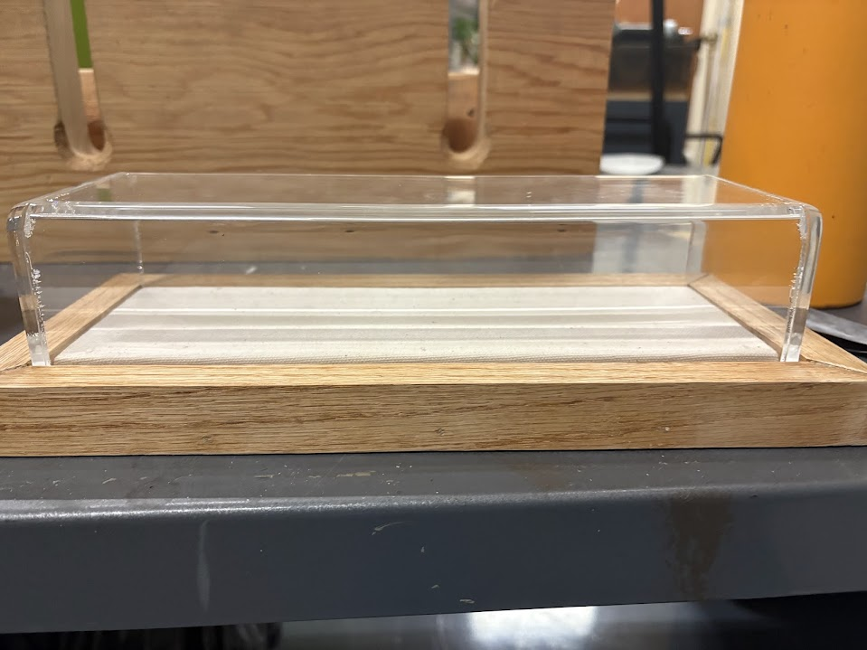
After a year of practice, mentored a fellow intern through designing a case for a necklace exhibit, explaining design methodology, guiding mount decisions, building the case collaboratively, and completing fabric wrapping together.

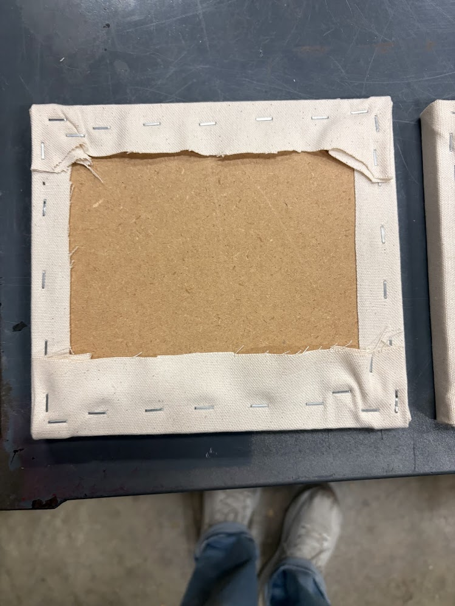
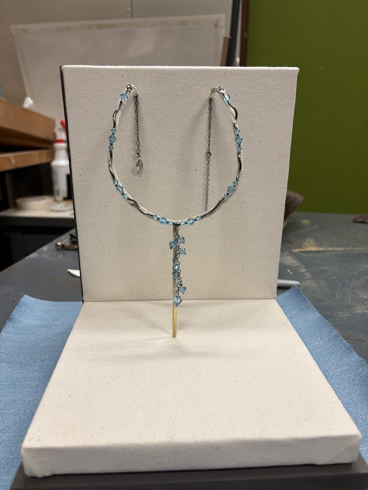
Carried out a large-scale archival hanging project to optimize storage space, working without a laser measurer and achieving precise museum-standard placement across works spanning up to five feet. Assessed and replaced hardware on each piece throughout.
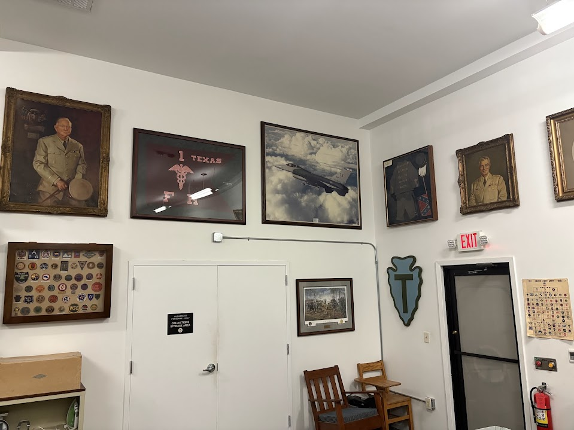
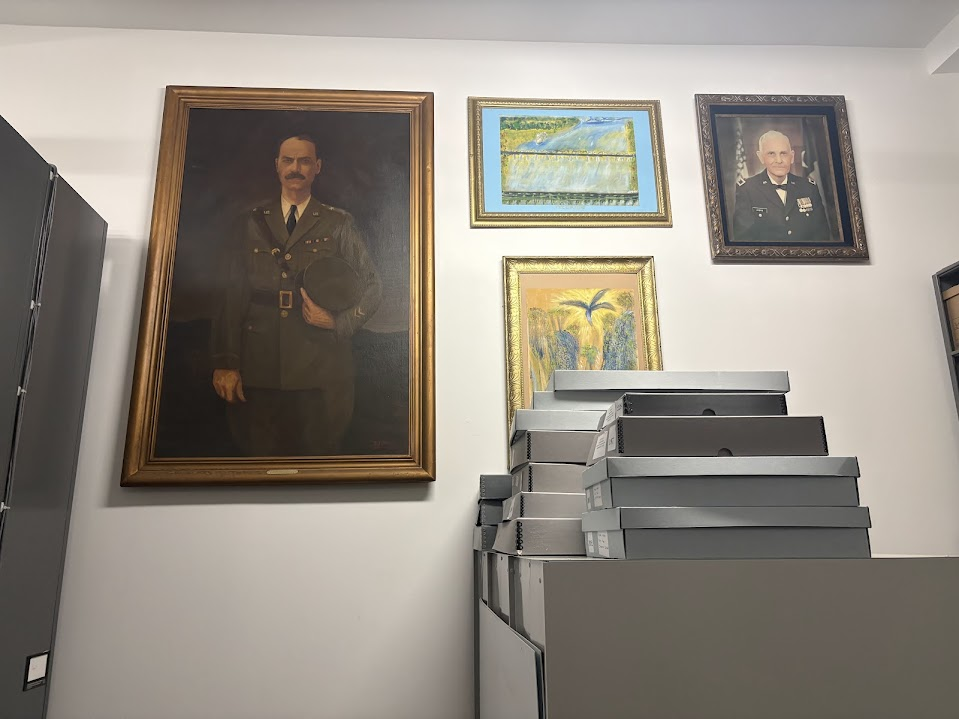
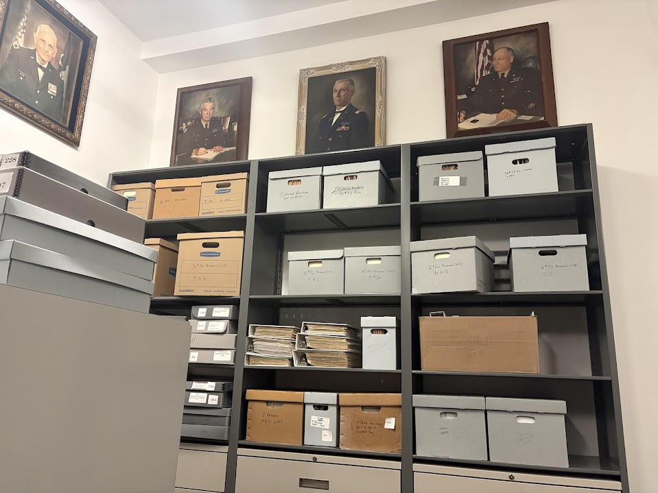
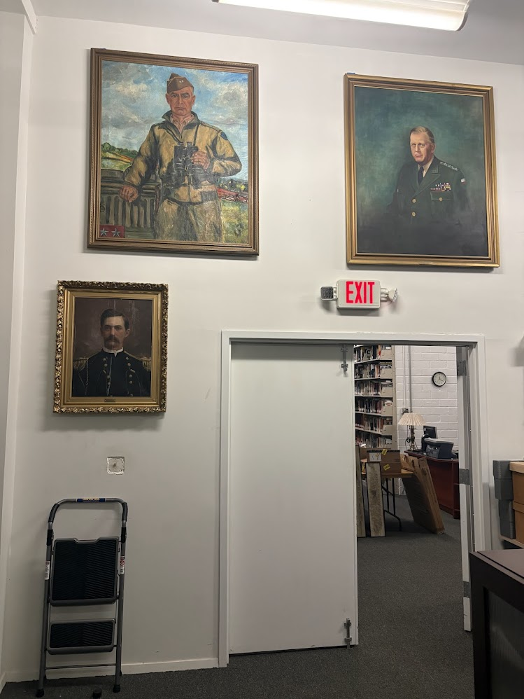
Contributed to a range of hands-on construction projects including tool storage shelving, the quantum hut structure, sliding doors, and fabric-wrapped wall panels.
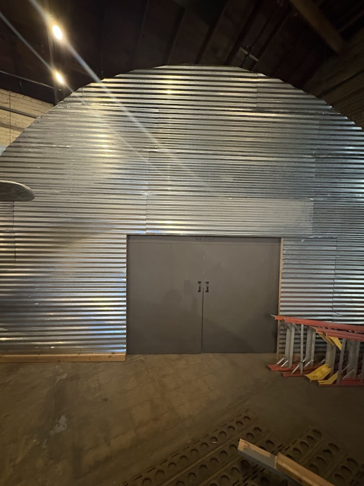
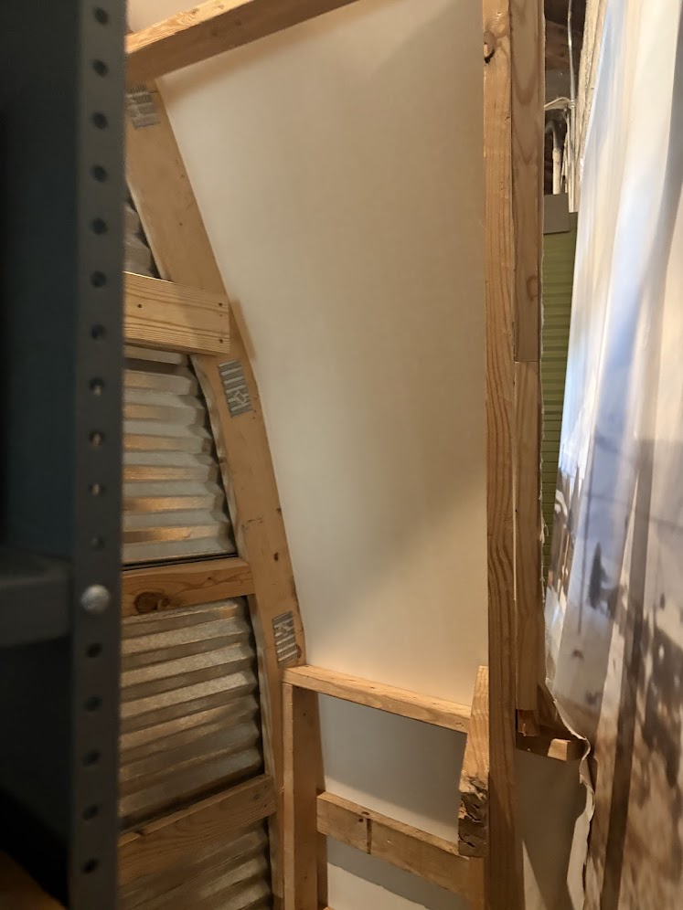
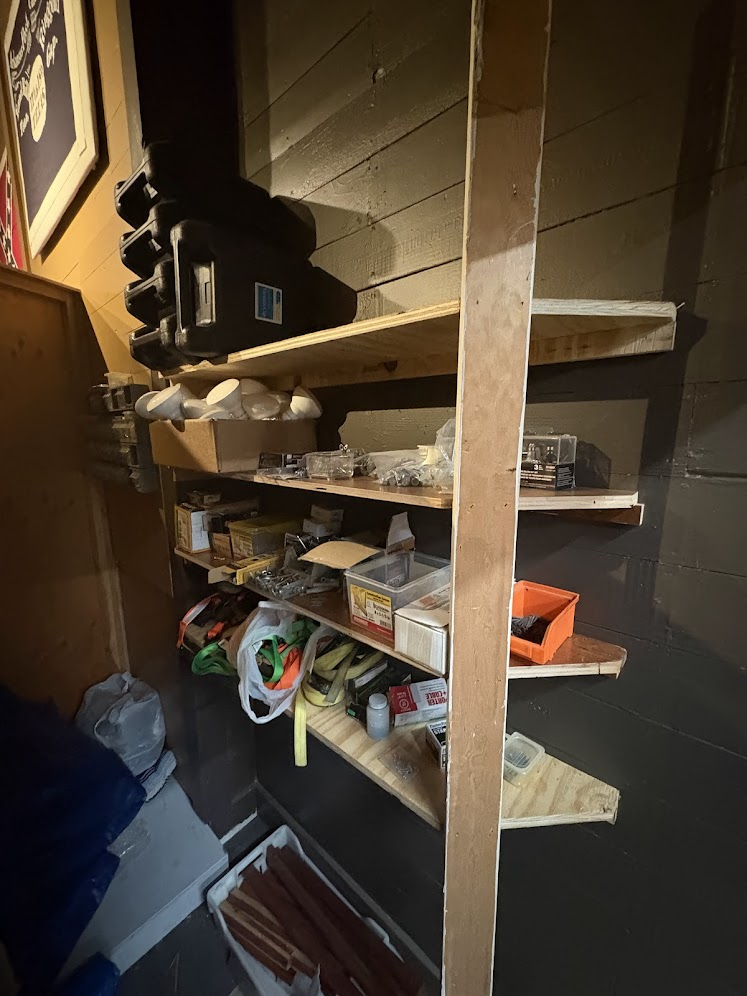